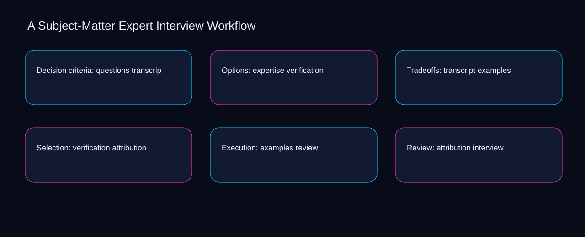

When transcript is separated from interview, subject-matter expert interview workflow becomes difficult to review and exceptions accumulate silently. A bounded method for turning subject-matter expert interview workflow into an owned, reviewable operating practice. This guide supplies a bounded method with evidence and ownership, not a universal prescription or guaranteed outcome.
Decision criteria: questions transcript
A review of decision criteria: questions transcript should expose transcript, verification, and the decision they inform. Define the artifact, owner, acceptance condition, and excluded work. Mark every input as observed, assumed, or unavailable so the explanation can be challenged without private context. Inspect examples, attribution, review, interview, questions in the topic-specific walkthrough. A Subject-Matter Expert Interview Workflow applies checklist-driven guide to decision criteria; the scope memo records signal-to-diagnosis with baseline-to-gap. Keep the rejected option beside transcript so another operator understands the verification choice.
Reopen decision criteria: questions transcript whenever attribution changes the accepted review boundary. Compare a normal path with an exception path. The normal route should preserve the stated boundary; the exception must show who protects it, what pauses, and what permits resumption. Inspect interview, questions, expertise, transcript, verification in the topic-specific walkthrough. A Subject-Matter Expert Interview Workflow applies checklist-driven guide to decision criteria; the boundary map records signal-to-diagnosis with baseline-to-gap. Date the attribution evidence and name who will verify review.
causal analysis checkpoint
Use questions as the entry condition for decision criteria: questions transcript and expertise as its exit evidence. Trace the causal chain from the first signal to the recorded outcome. Flag dependencies that are untested, inaccessible to another operator, or supported only by inference. Inspect transcript, verification, examples, attribution, review in the topic-specific walkthrough. A Subject-Matter Expert Interview Workflow applies checklist-driven guide to decision criteria; the observation log records signal-to-diagnosis with baseline-to-gap. The record closes when questions has an owner and expertise has an observable trigger.
Options: expertise verification
Place options: expertise verification inside a bounded scenario involving attribution, review, and a named reviewer. Ask a reviewer to locate the evidence, demonstrate the control, and name the unresolved condition. Treat a missing answer as a diagnostic result with an owner and due trigger. Inspect interview, questions, expertise, transcript, verification in the topic-specific walkthrough. A Subject-Matter Expert Interview Workflow applies checklist-driven guide to options; the assumption register records signal-to-diagnosis with baseline-to-gap. If evidence breaks between attribution and review, return to diagnosis instead of polishing the artifact.
Options: expertise verification begins by separating questions from expertise. Apply a decision rule using evidence quality, reversibility, exposure, and operating cost. Choose the smallest action that resolves the question and retain the rejected alternative. Inspect transcript, verification, examples, attribution, review in the topic-specific walkthrough. A Subject-Matter Expert Interview Workflow applies checklist-driven guide to options; the decision brief records signal-to-diagnosis with baseline-to-gap. A priority remains provisional until questions survives the expertise review.
implementation instruction checkpoint
A review of options: expertise verification should expose verification, examples, and the decision they inform. Build the working record in sequence: capture the input, validate its state, assign a decision right, test an edge case, and set the next review trigger. Inspect attribution, review, interview, questions, expertise in the topic-specific walkthrough. A Subject-Matter Expert Interview Workflow applies checklist-driven guide to options; the implementation ticket records signal-to-diagnosis with baseline-to-gap. Keep the rejected option beside verification so another operator understands the examples choice.
Tradeoffs: transcript examples
Reopen tradeoffs: transcript examples whenever examples changes the accepted attribution boundary. Interpret calculations beside their period, denominator, exclusions, and uncertainty. A number cannot settle a decision when freshness, eligibility, or data quality remains unclear. Inspect review, interview, questions, expertise, transcript in the topic-specific walkthrough. A Subject-Matter Expert Interview Workflow applies checklist-driven guide to tradeoffs; the calculation sheet records signal-to-diagnosis with baseline-to-gap. Date the examples evidence and name who will verify attribution.
Use interview as the entry condition for tradeoffs: transcript examples and questions as its exit evidence. Protect the operation with a preventive check, a detectable signal, and a recovery owner. Define the stop condition before the team encounters the exception. Inspect expertise, transcript, verification, examples, attribution in the topic-specific walkthrough. A Subject-Matter Expert Interview Workflow applies checklist-driven guide to tradeoffs; the control register records signal-to-diagnosis with baseline-to-gap. The record closes when interview has an owner and questions has an observable trigger.
exception handling checkpoint
Place tradeoffs: transcript examples inside a bounded scenario involving transcript, verification, and a named reviewer. Document exceptions separately from defaults. Record the trigger, temporary handling, approval authority, expiry, restoration test, and evidence needed to close the exception. Inspect examples, attribution, review, interview, questions in the topic-specific walkthrough. A Subject-Matter Expert Interview Workflow applies checklist-driven guide to tradeoffs; the exception note records signal-to-diagnosis with baseline-to-gap. If evidence breaks between transcript and verification, return to diagnosis instead of polishing the artifact.

Selection: verification attribution
Selection: verification attribution begins by separating attribution from review. Rank actions by decision value, dependency, reversibility, and effort. Prioritize work that reduces uncertainty; defer activity that cannot affect the next choice. Inspect interview, questions, expertise, transcript, verification in the topic-specific walkthrough. A Subject-Matter Expert Interview Workflow applies checklist-driven guide to selection; the priority queue records signal-to-diagnosis with baseline-to-gap. A priority remains provisional until attribution survives the review review.
A review of selection: verification attribution should expose questions, expertise, and the decision they inform. Use each reference for a narrow claim function. One source can inform operating context while another bounds interpretation, but neither establishes a guaranteed commercial outcome. Inspect transcript, verification, examples, attribution, review in the topic-specific walkthrough. A Subject-Matter Expert Interview Workflow applies checklist-driven guide to selection; the source ledger records signal-to-diagnosis with baseline-to-gap. Keep the rejected option beside questions so another operator understands the expertise choice.
measurement guidance checkpoint
Reopen selection: verification attribution whenever verification changes the accepted examples boundary. Pair a leading signal with an outcome signal and a data-quality check. Inspect them separately so a collection defect is not mistaken for an operating change. Inspect attribution, review, interview, questions, expertise in the topic-specific walkthrough. A Subject-Matter Expert Interview Workflow applies checklist-driven guide to selection; the measurement card records signal-to-diagnosis with baseline-to-gap. Date the verification evidence and name who will verify examples.
Execution: examples review
Use review as the entry condition for execution: examples review and interview as its exit evidence. Set cadence according to change risk rather than calendar habit. Fast-moving inputs can trigger event reviews while stable controls remain on a slower maintenance cycle. Inspect questions, expertise, transcript, verification, examples in the topic-specific walkthrough. A Subject-Matter Expert Interview Workflow applies checklist-driven guide to execution; the cadence calendar records signal-to-diagnosis with baseline-to-gap. The record closes when review has an owner and interview has an observable trigger.
Place execution: examples review inside a bounded scenario involving expertise, transcript, and a named reviewer. Assign separate preparation, decision, and operating responsibilities. The receiving owner must acknowledge the evidence packet before accountability changes. Inspect verification, examples, attribution, review, interview in the topic-specific walkthrough. A Subject-Matter Expert Interview Workflow applies checklist-driven guide to execution; the ownership matrix records signal-to-diagnosis with baseline-to-gap. If evidence breaks between expertise and transcript, return to diagnosis instead of polishing the artifact.
escalation condition checkpoint
Execution: examples review begins by separating examples from attribution. Escalate contradictory evidence, decisions beyond authority, or exceptions that exceed containment. Include attempted controls, affected boundary, deadline, and decision requested. Inspect review, interview, questions, expertise, transcript in the topic-specific walkthrough. A Subject-Matter Expert Interview Workflow applies checklist-driven guide to execution; the escalation packet records signal-to-diagnosis with baseline-to-gap. A priority remains provisional until examples survives the attribution review.
Review: attribution interview
A review of review: attribution interview should expose review, interview, and the decision they inform. Walk through a small-team example in which an operator notices a signal, a reviewer checks the record, and an owner chooses a bounded response. Repeat with a failure path. Inspect questions, expertise, transcript, verification, examples in the topic-specific walkthrough. A Subject-Matter Expert Interview Workflow applies checklist-driven guide to review; the scenario transcript records signal-to-diagnosis with baseline-to-gap. Keep the rejected option beside review so another operator understands the interview choice.
Reopen review: attribution interview whenever expertise changes the accepted transcript boundary. State the limitation directly. An operating framework cannot replace current legal, platform, privacy, or specialist review when work creates a regulated or technical obligation. Inspect verification, examples, attribution, review, interview in the topic-specific walkthrough. A Subject-Matter Expert Interview Workflow applies checklist-driven guide to review; the limitation note records signal-to-diagnosis with baseline-to-gap. Date the expertise evidence and name who will verify transcript.
tradeoff checkpoint
Use examples as the entry condition for review: attribution interview and attribution as its exit evidence. Expose the tradeoff before acting. Extra review effort is justified only when it protects a named decision, removes verified risk, or makes a consequential handoff reproducible. Inspect review, interview, questions, expertise, transcript in the topic-specific walkthrough. A Subject-Matter Expert Interview Workflow applies checklist-driven guide to review; the tradeoff record records signal-to-diagnosis with baseline-to-gap. The record closes when examples has an owner and attribution has an observable trigger.
Verification: review questions
Place verification: review questions inside a bounded scenario involving expertise, transcript, and a named reviewer. Reject artifact collection without decision use. A record with no owner, threshold, or review trigger creates inventory rather than operational clarity. Inspect verification, examples, attribution, review, interview in the topic-specific walkthrough. A Subject-Matter Expert Interview Workflow applies checklist-driven guide to verification; the anti-pattern review records signal-to-diagnosis with baseline-to-gap. If evidence breaks between expertise and transcript, return to diagnosis instead of polishing the artifact.
Verification: review questions begins by separating examples from attribution. Verify with a second operator who did not author the record. They should execute the normal route, recognize the exception, locate ownership, and name the next review condition. Inspect review, interview, questions, expertise, transcript in the topic-specific walkthrough. A Subject-Matter Expert Interview Workflow applies checklist-driven guide to verification; the verification receipt records signal-to-diagnosis with baseline-to-gap. A priority remains provisional until examples survives the attribution review.
explanation checkpoint
A review of verification: review questions should expose interview, questions, and the decision they inform. Reconcile the maintenance history against the current boundary. Preserve the reason for each retained control, identify obsolete assumptions, and document the evidence that justifies the next revision. Inspect expertise, transcript, verification, examples, attribution in the topic-specific walkthrough. A Subject-Matter Expert Interview Workflow applies checklist-driven guide to verification; the dependency map records signal-to-diagnosis with baseline-to-gap. Keep the rejected option beside interview so another operator understands the questions choice.
Maintenance: interview expertise
Reopen maintenance: interview expertise whenever interview changes the accepted questions boundary. Contrast the current operating state with the intended state. Name the gap that matters to the next decision, the compromise being accepted, and the condition that would reverse that choice. Inspect expertise, transcript, verification, examples, attribution in the topic-specific walkthrough. A Subject-Matter Expert Interview Workflow applies checklist-driven guide to maintenance; the handoff acknowledgement records signal-to-diagnosis with baseline-to-gap. Date the interview evidence and name who will verify questions.
Use transcript as the entry condition for maintenance: interview expertise and verification as its exit evidence. Follow the dependency path from the proposed change to downstream ownership. Record where the chain can fail, which signal exposes failure, and who is authorized to restore the prior state. Inspect examples, attribution, review, interview, questions in the topic-specific walkthrough. A Subject-Matter Expert Interview Workflow applies checklist-driven guide to maintenance; the maintenance trigger records signal-to-diagnosis with baseline-to-gap. The record closes when transcript has an owner and verification has an observable trigger.
diagnostic prompt checkpoint
Place maintenance: interview expertise inside a bounded scenario involving attribution, review, and a named reviewer. Run an end-state diagnostic with a fresh reviewer. Ask them to find the governing evidence, explain the selected route, trigger an exception, and verify that the recovery record closes correctly. Inspect interview, questions, expertise, transcript, verification in the topic-specific walkthrough. A Subject-Matter Expert Interview Workflow applies checklist-driven guide to maintenance; the change history records signal-to-diagnosis with baseline-to-gap. If evidence breaks between attribution and review, return to diagnosis instead of polishing the artifact.
Reference boundaries
For A Subject-Matter Expert Interview Workflow, this private guide uses Creating helpful, reliable, people-first content from Google Search Central and SEO Starter Guide from Google Search Central as public reference anchors. The baseline-to-gap reading connects interview, questions, expertise, transcript; the sequence-to-verification boundary covers verification, examples, attribution, review. Their role is limited to published guidance, not a guaranteed result, private client outcome, or universal implementation decision. Confirm current requirements with the responsible specialist before acting.
Close the operating loop
The next maturity step makes review observable, interview owned, and questions reviewable inside the subject-matter expert interview workflow rhythm. Preserve limitations and rejected options for the next reviewer. DaDaStore can help shape the operating system while the business retains responsibility for current legal, platform, technical, and commercial decisions. The B-content-marketing-2 handoff records interview, questions, expertise, transcript, verification, examples, attribution, review as topic-specific review inputs.